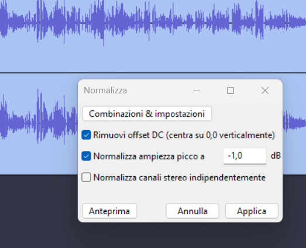
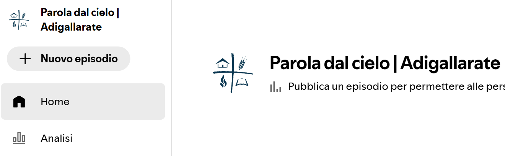
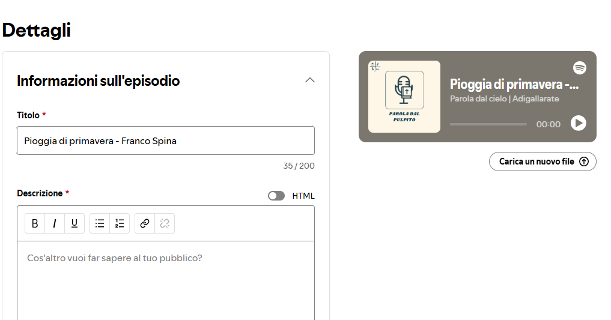
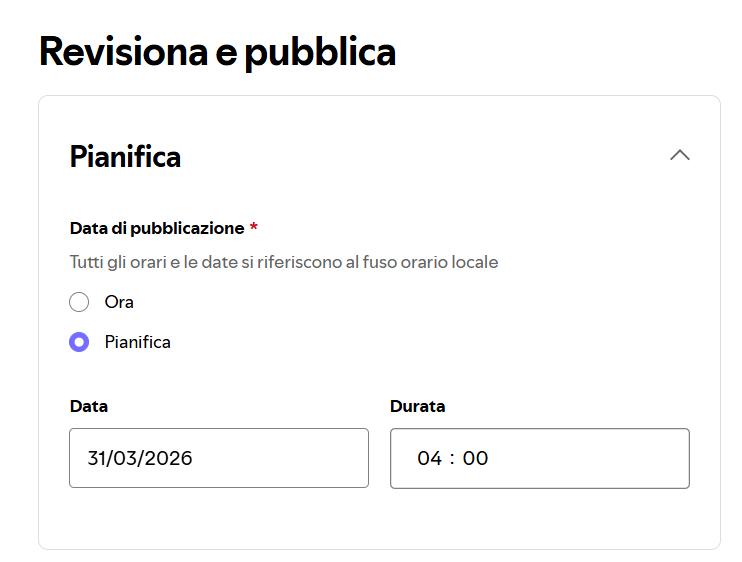
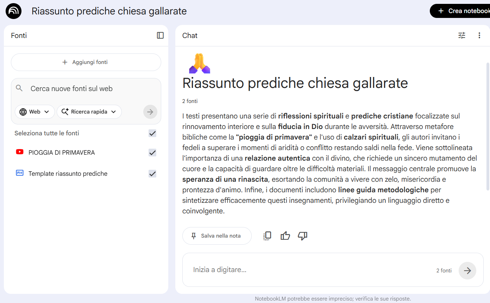

Team Spotify Gallarate
Cartella uploads
Qua sotto trovi i 3 caricamenti più recenti
Cartella intro-outro
Qua sotto trovi i jingle di apertura e chiusura per gli episodi
Benvenuto nel Team Spotify di Gallarate! 🚀
In questa sezione troverai tutte le informazioni per impostare il caricamento delle prediche su spotify!
Squadra Mixer 🎚️ - Caricamento predica su gallarate-org
Al momento la squadra mixer è attrezzata per inviare la predicazione come live su Youtube. A questo aggiungiamo la registrazione della predica su chiavetta direttamente dal mixer, da far partire e fermare insieme alla live di Youtube.
A fine culto inserisci la chiavetta nel pc sulla destra del mixer, apri la cartella 📁 upload-prediche sul desktop e fai doppio click sull'eseguibile gallarate_usb_to_s3.
Nella stessa cartella controlla sul file main.log le fasi di avanzamento (conversione WAV - MP3, caricamento in cloud) fino a che viene stampata una riga di testo simile a "Script completato".
Il file è quindi disponibile nella sezione "Audio Prediche" di questo sito.
Squadra Spotify 🎧 - Scaricamento audio + editing
Il team Spotify si occuperà di scaricare l'audio della predica, editarlo e caricarlo su Spotify. Trovi l'audio dell'ultima predica nella sezione "Audio Prediche" di questo sito.
Per modificare l'audio prima della pubblicazione, usa un tool di editing audio gratuito e semplice come
 Audacity
.
Audacity
.
Prima di tutto verifica che non ci siano parti iniziali / finali dell'audio non collegate alla predica (es. problemi tecnici di audio iniziali, testimonianze personali non legate all'inizio della predica, altro).
Poi esegui fai la normalizzazione dell'audio per garantire un livello di volume uniforme. In Audacity puoi farlo selezionando tutto l'audio (CTRL+A) e poi andando su Effetti -> Volume e compressione -> Normalizza.
L'impostazione seguente va bene

Poi esporta l'audio in formato MP3 (File -> Esporta -> Esporta come MP3).
Una volta fatto questo, riapri audacity e inserisci all'inizio e alla fine della predica i jingle di introduzione e di conclusione, li trovi nella sezione Intro - Outro di questo sito.
Infine esporta nuovamente l'audio definitivo dell'episodio.
Squadra Spotify 🎧 - Caricamento episodio su canale Spotify
Una volta che l'audio è sistemato, ti occuperai di caricare il nuovo episodio sullo show Parola dal cielo | AdiGallarate del canale spotify della chiesa.
Per creare il nuovo episodio accedi a Spotify for Creators con l'account della chiesa che ti è stato fornito, seleziona lo show Parola dal cielo | AdiGallarate e clicca su Nuovo episodio.

Si apre una schermata dove caricare l'audio, una volta selezionato l'audio si apre il form dei dettagli dell'episodio, dove inserire titolo e il descrizione.

Come titolo inseriamo il titolo della live Youtube di quel giorno, un trattino e nome e cognome del predicatore (es. Pioggia di primavera - Franco Spina).
Una volta inserita una descrizione, puoi procedere con la revisione e decidere l'orario di pubblicazione dell'episodio.

Per il momento ci diamo tempo fino a lunedì sera per caricare l'episodio, in modo che martedì mattina sul presto (4:00) sia pubblicato.
Squadra Spotify 🎧 - Utilizzo di NotebookLM per descrizione episodio
Per generare una descrizione dell'episodio da inserire su Spotify, puoi aiutarti se vuoi con
 NotebookLM,
strumento di intelligenza artificiale per generare del testo a partire da una o più fonti di varia natura (audio, testo, link web, altro).
NotebookLM,
strumento di intelligenza artificiale per generare del testo a partire da una o più fonti di varia natura (audio, testo, link web, altro).
Crea un notebook (la tua area di lavoro) dedicata a questa attività, ti si apre una schermata con un'area dedicata alle fonti e una centrale alla chat.

Le fonti sono i documenti che fornisci a NotebookLM per generare il testo, nel nostro caso saranno la live youtube della predica e un template con le istruzioni su come generare la descrizione dell'episodio.
Puoi usare un template come questo
Template per generazione descrizione episodio
con le istruzioni per generare la descrizione. Se hai in mente template / istruzioni migliori di questa fammi sapere che aggiorno le istruzioni di questo sito.
Nella sezione chat fai una domanda del tipo "Mi fai una descrizione della predica audio sfruttando il template?".
Il risultato può essere usato come supporto per descrivere i momenti salienti della predica, è però importante evidenziare per l'ascoltatore quello che in primis è stato di benedizione e di edificazione per noi stessi.